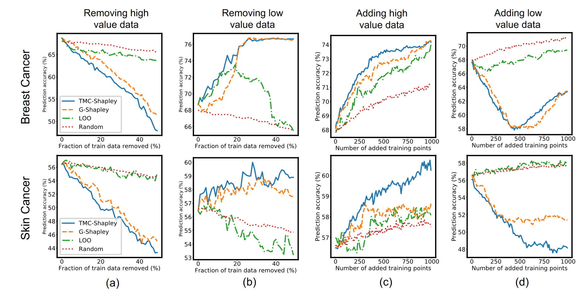
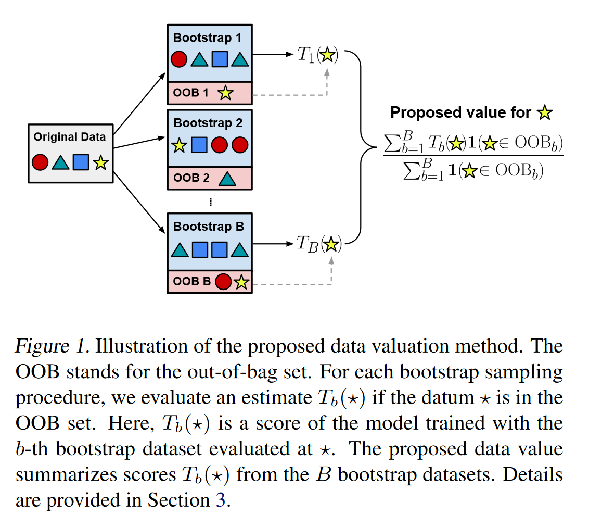
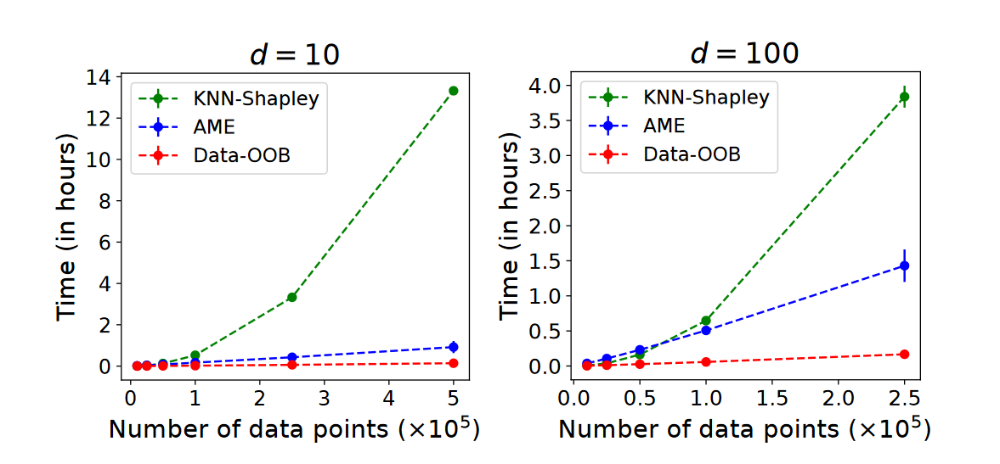
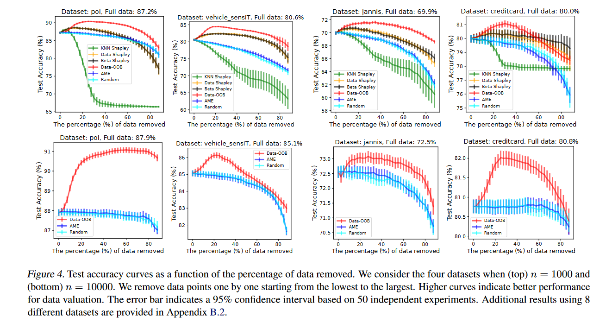

<!DOCTYPE html>
<html lang="en">
  <head>
    <meta charset="utf-8" />
    <meta name="viewport" content="width=device-width, initial-scale=1.0, maximum-scale=1.0, user-scalable=no" />

    <title>Group Meeting Share 23/05/05</title>
    <link rel="shortcut icon" href="./favicon.ico" />
    <link rel="stylesheet" href="./dist/reset.css" />
    <link rel="stylesheet" href="./dist/reveal.css" />
    <link rel="stylesheet" href="./dist/theme/simple.css" id="theme" />
    <link rel="stylesheet" href="./css/highlight/github.css" />

    <link rel="stylesheet" href="./_assets/custom.css" />

  </head>
  <body>
    <div class="reveal">
      <div class="slides"><section  data-markdown><script type="text/template">

<div class="middle center">
<div style="width: 100%">

# Data-OOB (ICML '23)

<hr/>

<u>O</u>ut-<u>o</u>f-<u>b</u>ag Estimate as a Simple and Efficient Data Value

<font color="gray">Yongchan Kwon</font> (Columbia U) & <font color="gray">James Zou</font> (Stanford U)

<div style="text-align: right; margin-top: 1em;">
<p>2023.5.5&emsp;&emsp;&emsp;</p>
</div>

</div>
</div>

</script></section><section ><section data-markdown><script type="text/template">

<div class="middle center">
<div style="width: 100%">

# Part.1 Background

</div>
</div>

</script></section><section data-markdown><script type="text/template">

## Downstream tasks of valuation

Many Shapley-based data valuation methods have shown promising results in various downstream tasks. 

- Data Cleaning, <font color="gray">i.e., recognize harmful/noisy/irrelevant data points</font>;
- Data Selection or Summarization, <font color="gray">e.g.,unbalanced scenario</font>;
- Data Pricing <font color="red">not only rank [less work]</font>;
- ...

<div style="text-align: left; margin-top: 0.5em;">


</div>

</script></section><section data-markdown><script type="text/template">

## Shortage of existing work

- General Data Shapley requires training a significant number of models;
- KNN-Shapley only for unweighted $k$-NN models;
- Improving sample efficiency still need heavy computational costs (small dataset $\le 1000$);
- Validation dataset for utility function is not always available;
- Shapley axioms’ relevance to machine learning applications is unclear;
- ...

</script></section></section><section ><section data-markdown><script type="text/template">

<div class="middle center">
<div style="width: 100%">

# Part.2 OOB method

</div>
</div>

</script></section><section data-markdown><script type="text/template">

## Jackknife-after-Bootstrap

<font color="blue">**Bootstrap**</font>: resampling on original samples with replacement

Using resampled statistics from the original data can approximate the relationship between the original sample statistics and population statistics

<font color="blue">**Jackknife**</font>: leave one out

Generates multiple leave-one-out estimates by repeatedly deleting one observation from the original data.

</script></section><section data-markdown><script type="text/template">

## Framework

<div class="mul-cols">
<div class="col">

<div style="text-align: left; margin-top: 0.5em;">

</div>
</div>

<div class="col">
Why validation dataset is not necessary?

Predicting over the training data!

Each weak leaner is a decision tree and $T(y_1, y_2) = \mathbb{1}( y_1 = y_2 )$.

$\frac{1}{n} \sum_{i=1}^{n} \frac{\sum_{b=1}^{B} \mathbb{1}(w_{b i}=0) T(y_{i}, f_{b}(x_{i}))}{\sum_{b=1}^{B} \mathbb{1}(w_{b i}=0)}$

</div>
</div>

</script></section></section><section ><section data-markdown><script type="text/template">

<div class="middle center">
<div style="width: 100%">

# Part.3 Experiments

</div>
</div>

</script></section><section data-markdown><script type="text/template">

## Efficiency: time cost

<div style="text-align: left; margin-top: 0.5em;">

</div>

d = 10 and d = 100

</script></section><section data-markdown><script type="text/template">

## Effectiveness: Remove low value data

<div style="text-align: left; margin-top: 0.5em;">

</div>

</script></section></section><section  data-markdown><script type="text/template">

<div class="middle center">
<div style="width: 100%">

# Thanks

<hr/>

**Questions?**

</div>
</div></script></section></div>
    </div>

    <script src="./dist/reveal.js"></script>

    <script src="./plugin/markdown/markdown.js"></script>
    <script src="./plugin/highlight/highlight.js"></script>
    <script src="./plugin/zoom/zoom.js"></script>
    <script src="./plugin/notes/notes.js"></script>
    <script src="./plugin/math/math.js"></script>
    <script>
      function extend() {
        var target = {};
        for (var i = 0; i < arguments.length; i++) {
          var source = arguments[i];
          for (var key in source) {
            if (source.hasOwnProperty(key)) {
              target[key] = source[key];
            }
          }
        }
        return target;
      }

      // default options to init reveal.js
      var defaultOptions = {
        controls: true,
        progress: true,
        history: true,
        center: true,
        transition: 'default', // none/fade/slide/convex/concave/zoom
        slideNumber: true,
        plugins: [
          RevealMarkdown,
          RevealHighlight,
          RevealZoom,
          RevealNotes,
          RevealMath
        ]
      };

      // options from URL query string
      var queryOptions = Reveal().getQueryHash() || {};

      var options = extend(defaultOptions, {"transition":"slide","transitionSpeed":"fast","center":false,"slideNumber":"c/t","width":1000}, queryOptions);
    </script>


    <script>
      Reveal.initialize(options);
    </script>
  </body>
</html>
